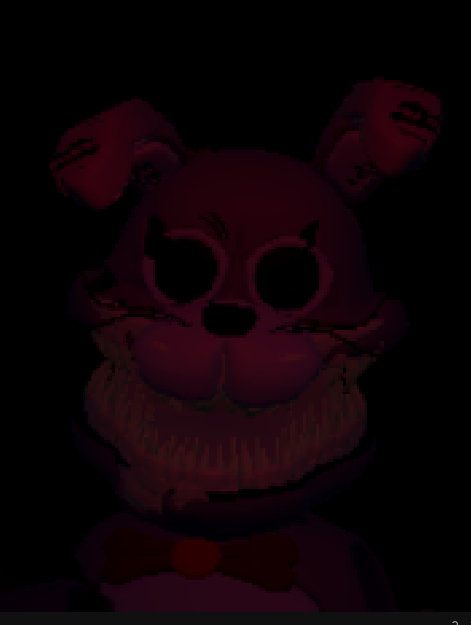

Это фанатская игра по мотивам знаменитой серии "Five Nights at Freddy's". В этой игре вам предстоит пережить ночи, исследуя таинственное место, полное загадок и угроз. Постарайтесь выжить, избегая встреч с машинами для убийств и не попадаясь на их ловушки.
Пройдите все ночи, и прочувствуйте всю атмосферу ужаса.
Этот проект создан на движке Unity и ещё находится на стадии разработки, в версии бета-тестирования, поэтому могут встречаться баги и незначительные проблемы с поведением врагов и прочие мелкие недочёты. Но скоро все эти неполадки будут устранены. Игра создана для платформы Android, и в ближайшее время будет переведена на стадию релиза.
Платформа: Android
Язык программирования: C#
Разработчик: Dredword